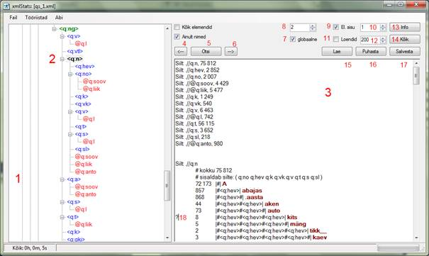
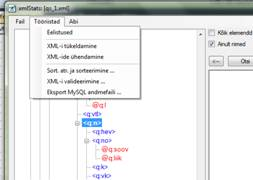
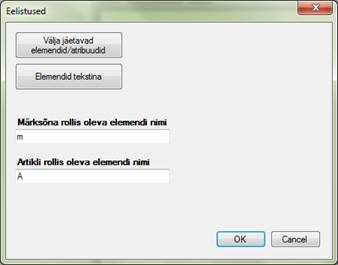

Lisatöövahend „xmlStats“
Läbi aegade on EKI käsutuses olnud kümneid XML vormingus sõnastikke, nii oma majas tehtuid kui ka väljast saaduid. Tekkis vajadus sõnastike struktuure uurida ja võrrelda. Struktuure tuleb eelkõige lihtsustada ja samas ka ühtlustada, kui kasutame sõnastikke sõnastikuhaldussüsteemis. EKI-s kasutatav sõnastikuhaldussüsteem nimetati hiljem ametlikult nimega EELex. Ühtlustatud struktuuride korral on EELex-i lihtsam hallata ning uusi toimetajaid uutes sõnastikes kergem koolitada. Lihtsustatud struktuuride korral omandab toimetaja töö kiiremini ning töö on tulemuslikum ja kergemini mõistetav.
xmlStats on
(pea)toimetaja tööriist, selle abil saab analüüsida ja kontrollida sõnastiku
XML faili ning teha skeemi otstarbekuse kohta järeldusi.
xmlStatsi saab kasutada selleks, et saada pilti XML faili tegelikust seisust ja selle vastavusest skeemile. Sealt saab teada, millised sõnaartikli struktuurid üldse esinevad, kus täpselt esinevad ja millise sagedusega; samuti seda, millist teksti võib leida segaelementide sees (elementide vahel). Selle teadmise alusel saab skeemi otstarbekamaks teha: kasutamata skeemiosad kõrvaldada, liiga keerulise ja harvaesineva struktuuriga artiklid ära lihtsustada, otsustada, kas muuta mõni vaba teksti element loendiks, kas kaotada mõni tekstijärjend baasist ära ja viia üle vaatesse jms.
Järgnevalt ekraanitõmmis, kus avatud on ÕS 2006:

1. Struktuuriala
2. Valitud element struktuuriala struktuuripuus.
3. Väljundiala.
4. Otsi ülespoole väljundialas. („ ß “).
5. Otsingutingimuse määramine väljundialas. („Otsi“).
6. Otsi allapoole väljundialas. („ à “).
7. Kas väljundialas esitatakse info ainult valitud elemendi kohta struktuuripuu konkreetses kohas või kõikide struktuuripuus olevate sama nimega elementide kohta.
8. Maksimaalne otseselt kuvatava teksti pikkus. Pikemaid tekste esindab väljundis trell #, maks ja lühemad tekstid saavad igaüks oma rea. Nii saab nt mingeid lühendeid või muidu korduvaid sõnu välja sõeluda, et neid kas vaatesse panna või omaette elemendiks teha. Lihtsustab ka segaelementide sees olevate tekstide jälgimist.
9. Kas näidata sätetes määratud elemente tekstina või mitte. Võimaldab uurida, kas on võimalik need elemendid failist ja skeemist välja jätta ning esitada nad sõnastikus vaate reeglite kaudu.
10. Teksti pikkus, mille korral elemente veel tekstina kuvatakse.
11. Kas püüda tuvastada tekstielementide loendeid. Püütakse üle loendada tekstielemendi sisu erinevad väärtused.
12. Maksimaalne loendi pikkus (üksuste hulk), mida otsitakse.
13. Väljundialas esitatakse info ainult valitud elemendi kohta. („Info“).
14. Väljundialas esitatakse info valitud elemendi ja kõigi tema allelementide kohta. („Kõik“).
15. Väljundiala laadimine varem salvestatuga. („Lae“).
16. Väljundiala puhastamine. („Puhasta“).
17. Väljundiala salvestamine. Tekib tavaline tekstifail, mida vaadata ja ka välja trükkida saab. („Salvesta“).
18. Kui soovitakse kuvada kõiki konkreetse struktuuriga artikleid, kirjutada rea ette küsimärk ning vajutada nuppu „Kõik“ (joonisel 14).
Nupud „Info“ ja „Kõik“ näitavad statistikat selle elemendi või atribuudi kohta, mis struktuurialas aktiivne on. Kõigepealt näidatakse loendina kõikide siltide koguarv. Edaspidi järgneb info iga sildi kohta eraldi: kui palju seda elementi kokku on, millised elemendid on tema "vanemad" ja millised on tema "lapsed". Samuti esitatakse sõnastikus esinevad erinevad struktuuriread, s.t elementide kombinatsioonid valitud elemendi sees. Struktuurirea koostis on: sagedus | elementide kombinatsioon | näide. Näide on esimene sellist struktuuri sisaldava artikli märksõna (õigemini märksõna rollis olev element, selle kohta vt allpool). Kui elementide kombinatsiooni sees on kuvatud ++, siis see näitab korduvat elementi selle koha peal.
Menüüpunktist Fail -> Ava valitakse fail, mida uurida soovitakse. Mitmeköitelise sõnastiku puhul tuleks enne köited ühendada üheks XML failiks (vt Tööriistade menüü -> XML-ide ühendamine). Struktuurialasse 1 tekib faili puukujuline struktuur. Ühtlasi kirjutatakse kettale kõik skeemid, mis antud failis sisaldusid. Nt ÕS 2006 korral on faili nimi ’qs_1.xml’. Faili asukohas tekivad sel juhul skeemifailid ’ qs_1_xml.xsd’ (XML enda skeem, nt atribuudid @xml:lang) ja ’ qs_1_q.xsd’ (ÕS enda skeem, prefiks ’q’ on kasutusel ÕS-is). Tekkinud skeemid on antud juhul ainult informatiivse väärtusega.
Ekraanitõmmis:

Ekraanitõmmis:

Tööriistad -> Eelistused -> Välja jäetavad elemendid/atribuudid. Avanevas aknas on vasemas veerus kõik selle sõnastiku elemendid koos nimeruumiga ja paremas veerus on need elemendid, mis vaikimisi analüüsist välja jäetakse. Seega saab tekitada paremasse veergu loetelu elementidest ja atribuutidest, mida programm peaks analüüsi käigus ignoreerima. Kõige silmanähtavam mõte on välja jätta nn tehnilised elemendid, mis pole seotud sõnastiku sisuga, nt guid G, koostaja K, koostamise ajad KA, KL, sorteerimisatribuut @O jne.
Tööriistad -> Eelistused -> Elemendid tekstina. Määra elemendid ja atribuudid, mis järgmise päringu väljundialas kuvatakse mitte elemendina/atribuudina, vaid oma sisuna. Kasutatakse juhul, kui on pandud linnuke (joonisel 9) ja määratud kuvatava teksti pikkus (10).
Märksõna rollis olevat elemendi sisu näidatakse struktuurireas näitena. Märksõna rollis on vaikimisi element m. Kui analüüsitavas XML failis on teisiti, siis seda saab muuta, valides menüüst Tööriistad -> Eelistused -> Märksõna rollis oleva elemendi nimi, nt terminibaasi puhul element „ter“ (termin).
Artikli rollis on vaikimisi element A. Kui analüüsitavas XML failis on teisiti, siis seda saab muuta, valides menüüst Tööriistad -> Eelistused -> Artikli rollis oleva elemendi nimi.
Tööriistade menüü kaudu on võimalik XML faile ühendada (nt sõnastiku eri köited üheks) ning ka tükeldada (nt moodustada eri köited).
Tööriistad -> Sort. atr. ja sorteerimine. Antud punkti tuleb kaasajastada. Nt türgi-eesti sõnastiku korral peab järjestus olema teistsugune kui eesti ükskeelse korral.
Antud punkti tuleks kaasajastada nii, et kogu info loetakse EELex sõnastiku konfiguratsioonifailist ’shsconfig_xxx.xml’ (sarnaselt toimib MySql failidesse eksport). Viimases leiduvad kõik vajalikud andmed, kaasa arvatud ka sõnastikus kehtiv tähestik ja tähtede asendusreeglid (kui neid on).
Tööriistad -> XML-i valideerimine ja määra avanenud aknas nii XML fail kui XSD fail. Tegemist on eraldi tööriistaga, kus on võimalik valideerida mistahes XML faili koos mingi skeemiga. Eelnevalt pole vajalik ka faili avada Fail -> Ava menüüst. Sõnastiku köiteid saab valideerida ka otse EELex sees sõnastiku tööriistade menüü valiku kaudu.
Tööriistad -> Eksport MySQL andmebaasi, avanevas aknas pealkirjaga "Sisend: köited" vali XML failid, mis failidesse eksportida vaja on. Soovitame avatavate failide nimele lisada lõppu nt sufiks ’_org’, sest programm kirjutab originaalfailid üle. Edasises aknas näidatakse sõnastiku andmeid (koodi, prefiksit ja nimeruumi e URI, tähestikku jne). Kõik need andmed sõnastiku kohta loetakse sõnastiku konfiguratsioonifailist ’ shsconfig_xxx.xml’ üle võrgu ja nad on informatsioonilise iseloomuga.
Andres Loopmann
27. okt. 12. a.